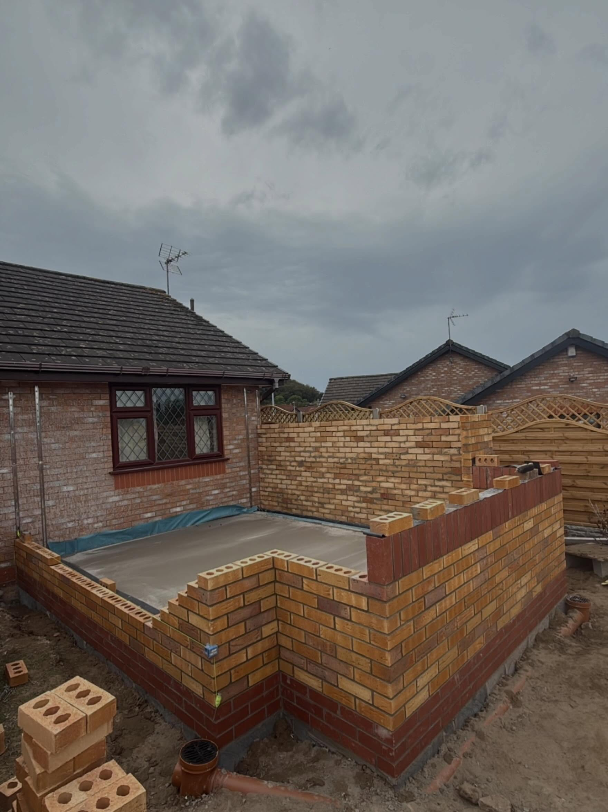
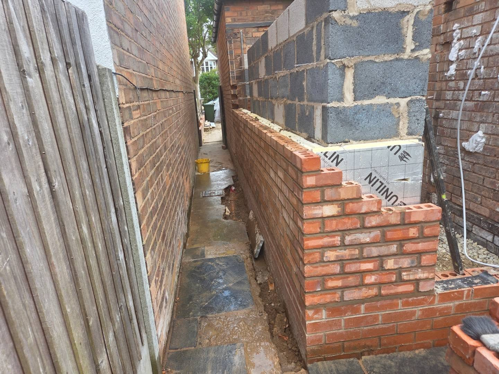
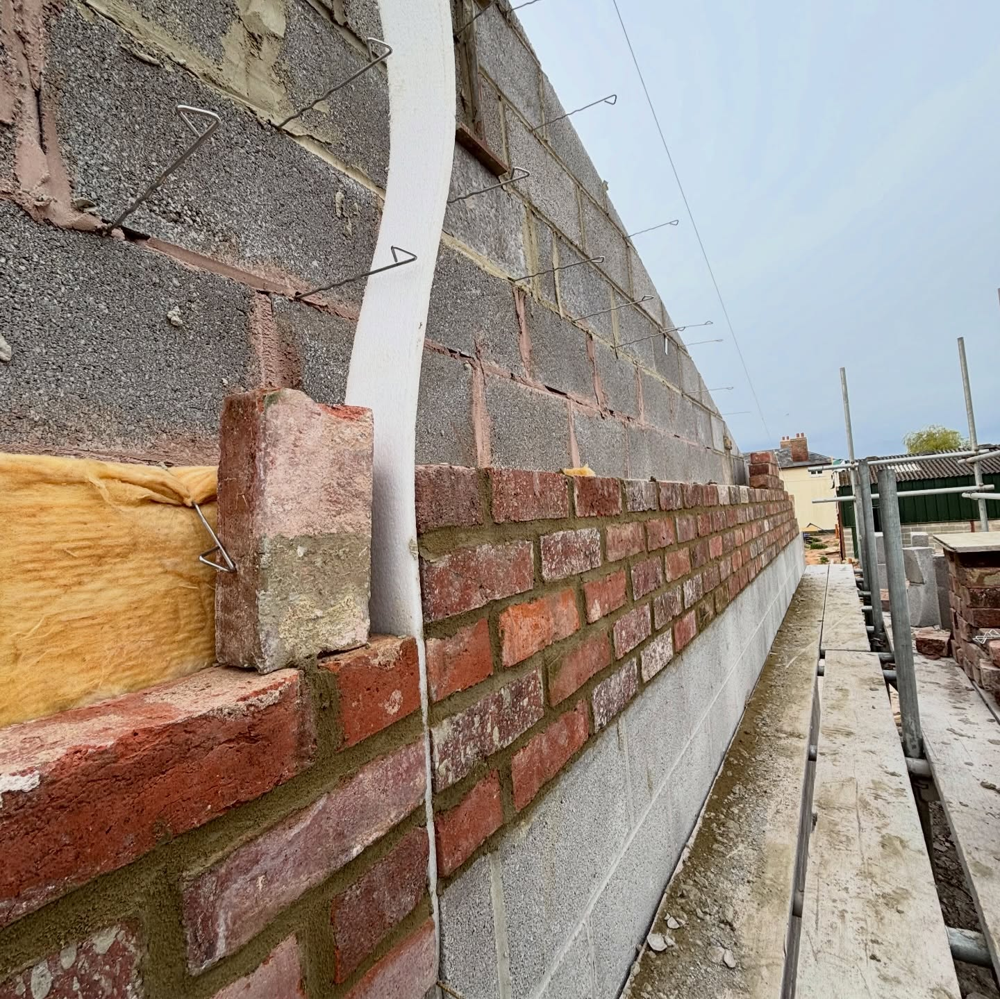
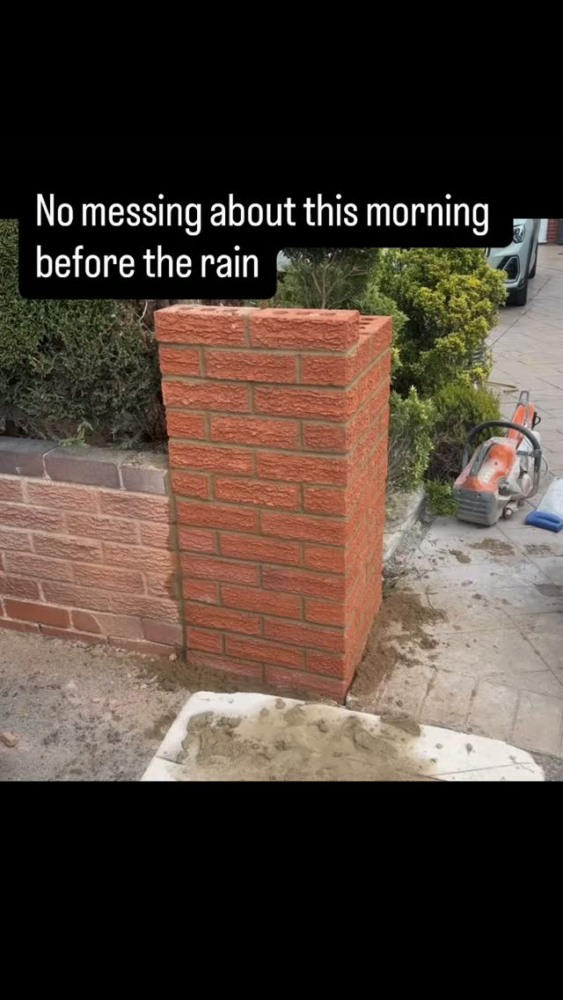
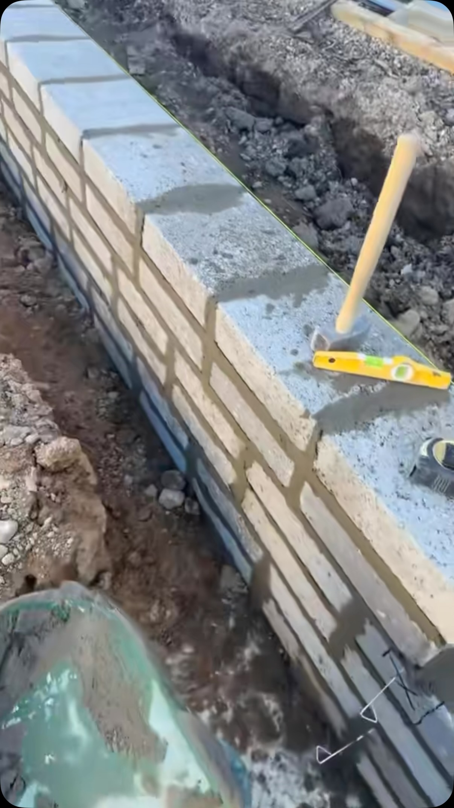

Bricklaying
Clean, accurate brick and block work, from garden walls and piers to full structural brickwork.
Learn more
DMac Builds is a Wigan-based building firm specialising in bricklaying, landscaping and bespoke garden design. Quality Built, Trusted Locally.
From a single garden wall to a full extension, every job is set out properly and finished to a standard we are happy to put our name to.
Clean, accurate brick and block work, from garden walls and piers to full structural brickwork.
Learn morePatios, paving, walls and fencing that turn a tired garden into somewhere you actually want to be.
Learn moreDesigned and built from scratch, levels, feature walls, patios and planting that work as one space.
Learn more Groundworks
Groundworks
Foundations, footings, bases and drainage, the groundwork that everything else stands on.
Learn more
Garage ConversionsTurn an unused garage into a proper room, sub floors, insulation, blockwork and new externals.
Learn more
ExtensionsSingle-storey extensions and structural brick and block work, built from the footings up.
Learn moreBrick repairs, alterations and refurbishment work that brings a tired property back to life.
Learn more
MaintenanceThe smaller brick, block and concrete jobs most builders will not turn up for.
Learn more Brick by brick
Brick by brickDMac Builds is run by Danny Mac, a bricklayer based in Platt Bridge, Wigan. What started on the tools has grown into a firm that takes on bricklaying, landscaping, groundworks and extensions across the Wigan area.
Set out with a level and string line and finished cleanly. It is the standard we post online every week.
Based in Platt Bridge and working across Wigan, our name is on every job we do.
You deal with the builder doing the work, not a call centre or a chain of subbies.
We come out, look at the job and give you an honest price with no pressure.
Straight off our Instagram and Facebook, real jobs across the Wigan area, from footings to finished brickwork.

A few recent reels from site. Tap to watch on Instagram.
We are based in Platt Bridge, Wigan and take on work right across the Wigan borough and the towns around it, roughly 20 miles in every direction.
Free, no-obligation quotes across Wigan and within 20 miles. Tell us about the job and we will come and take a look.